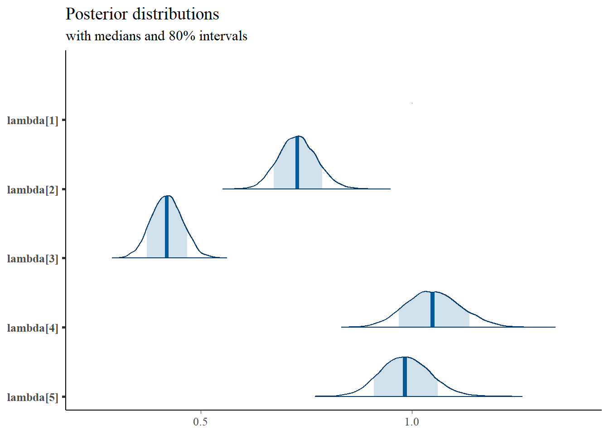

10.2 Posterior Predictive Distributions
The posterior predictive distribution is used heavily in model evaluation.
(look at Bayes notes)
Basically, the posterior predictive distribution is the what values of the observed data (\(Y\)) are mostly likely given the posterior distribution.
10.2.1 Example of posterior predictive distribution of correlations
In this example, we use the correlations of the observed variable as the function of interest.
# model code
jags.model.cfa <- function(){
#
# Specify the factor analysis measurement
# model for the observables
#
for (i in 1:n){
for(j in 1:J){
# model implied expectation for each observable
mu[i,j] <- tau[j] + ksi[i]*lambda[j]
# distribution for each observable
x[i,j] ~ dnorm(mu[i,j], inv.psi[j])
}
}
########################################
# Specify the (prior) distribution for
# the latent variables
########################################
for (i in 1:n){
# distribution for the latent variables
ksi[i] ~ dnorm(kappa, inv.phi)
}
########################################
# Specify the prior distribution for the
# parameters that govern the latent variables
########################################
kappa <- 0 # Mean of factor 1
inv.phi ~ dgamma(5, 10) # Precision of factor 1
phi <- 1/inv.phi # Variance of factor 1
########################################
# Specify the prior distribution for the
# measurement model parameters
########################################
for(j in 1:J){
tau[j] ~ dnorm(3, .1) # Intercepts for observables
inv.psi[j] ~ dgamma(5, 10) # Precisions for observables
psi[j] <- 1/inv.psi[j] # Variances for observables
}
lambda[1] <- 1.0 # loading fixed to 1.0
for (j in 2:J){
lambda[j] ~ dnorm(1, .1) # prior distribution for the remaining loadings
}
}
# data must be in a list
dat <- read.table("code/CFA-One-Latent-Variable/Data/IIS.dat", header=T)
mydata <- list(
n = 500, J = 5,
x = as.matrix(dat)
)
# vector of all parameters to save
param_save <- c("tau", paste0("lambda[",1:5,"]"), "phi", "psi")
# fit model
fit <- jags(
model.file=jags.model.cfa,
data=mydata,
parameters.to.save = param_save,
n.iter=15000,
n.burnin = 5000,
n.chains = 1, # for simplicity
n.thin=1,
progress.bar = "none")## module glm loaded## Compiling model graph
## Resolving undeclared variables
## Allocating nodes
## Graph information:
## Observed stochastic nodes: 2500
## Unobserved stochastic nodes: 515
## Total graph size: 8029
##
## Initializing modelprint(fit)## Inference for Bugs model at "C:/Users/noahp/AppData/Local/Temp/RtmpUNZc83/model3bfc8bd33b6.txt", fit using jags,
## 1 chains, each with 15000 iterations (first 5000 discarded)
## n.sims = 10000 iterations saved
## mu.vect sd.vect 2.5% 25% 50% 75% 97.5%
## lambda[1] 1.000 0.000 1.000 1.000 1.000 1.000 1.000
## lambda[2] 0.729 0.045 0.645 0.698 0.727 0.759 0.822
## lambda[3] 0.420 0.038 0.349 0.395 0.420 0.446 0.495
## lambda[4] 1.052 0.065 0.929 1.007 1.051 1.096 1.182
## lambda[5] 0.985 0.059 0.874 0.944 0.983 1.024 1.104
## phi 0.435 0.042 0.357 0.405 0.433 0.462 0.523
## psi[1] 0.373 0.028 0.321 0.354 0.372 0.391 0.431
## psi[2] 0.183 0.014 0.157 0.173 0.182 0.191 0.211
## psi[3] 0.180 0.012 0.157 0.171 0.179 0.187 0.204
## psi[4] 0.377 0.030 0.323 0.356 0.376 0.396 0.440
## psi[5] 0.266 0.022 0.225 0.251 0.265 0.280 0.310
## tau[1] 3.334 0.040 3.254 3.306 3.334 3.360 3.413
## tau[2] 3.897 0.029 3.841 3.878 3.897 3.917 3.952
## tau[3] 4.596 0.023 4.552 4.581 4.596 4.611 4.640
## tau[4] 3.034 0.041 2.955 3.006 3.034 3.061 3.114
## tau[5] 3.713 0.037 3.641 3.688 3.713 3.738 3.786
## deviance 3379.345 42.258 3298.273 3350.553 3379.160 3407.319 3463.922
##
## DIC info (using the rule, pD = var(deviance)/2)
## pD = 892.9 and DIC = 4272.2
## DIC is an estimate of expected predictive error (lower deviance is better).plot(fit)
# extract posteriors for all chains
jags.mcmc <- as.mcmc(fit)
a <- colnames(as.data.frame(jags.mcmc[[1]]))
plot.data <- data.frame(as.matrix(jags.mcmc, chains=T, iters = T))
colnames(plot.data) <- c("chain", "iter", a)
plot_title <- ggtitle("Posterior distributions",
"with medians and 80% intervals")
mcmc_areas(
plot.data,
pars = c(paste0("tau[",1:5,"]")),
prob = 0.8) +
plot_title
mcmc_areas(
plot.data,
pars = paste0("lambda[",1:5,"]"),
prob = 0.8) +
plot_title
mcmc_areas(
plot.data,
pars = c(paste0("psi[", 1:5, "]"), "phi"),
prob = 0.8) +
plot_title
# compute model implied covariance/correlations
# for each iterations
out.mat <- matrix(ncol=10,nrow=nrow(plot.data))
colnames(out.mat) <- c("r12", "r13", "r14", "r15", "r23", "r24", "r25", "r34","r35", "r45")
plot.data1 <- cbind(plot.data,out.mat)
# compute the model implied correlations for each iterations
i <- 1
for(i in 1:nrow(plot.data1)){
x <- plot.data1[i,]
x <- unlist(x)
lambda <- matrix(x[4:8], ncol=1)
phi <- matrix(x[9], ncol=1)
psi <- diag(x[10:14], ncol=5, nrow=5)
micov <- lambda%*%phi%*%t(lambda)+psi
D <- diag(sqrt(diag(micov)), ncol=5, nrow=5)
Dinv <- solve(D)
micor <- Dinv%*%micov%*%Dinv
outr <- micor[lower.tri(micor)]
# combine
plot.data1[i,20:29] <- outr
}
obs.mat <- matrix(cor(dat)[lower.tri(cor(dat))],byrow=T,
ncol=10,nrow=nrow(plot.data))
colnames(obs.mat) <- c("ObsR12", "ObsR13", "ObsR14", "ObsR15", "ObsR23", "ObsR24", "ObsR25", "ObsR34","ObsR35", "ObsR45")
plot.data1 <- cbind(plot.data1,obs.mat)
theme_set(theme_classic())
t1 <- grid::textGrob('PI')
t2 <- grid::textGrob('AD')
t3 <- grid::textGrob('IGC')
t4 <- grid::textGrob('FI')
t5 <- grid::textGrob('FC')
p12 <- ggplot(plot.data1) +
geom_density(aes(x=r12))+
geom_vline(aes(xintercept = ObsR12), linetype="dashed")+
lims(x=c(0.25, 0.75)) +
labs(x=NULL,y=NULL) + theme(axis.text.y = element_blank(),axis.ticks.y = element_blank(), axis.line.y=element_blank())
p13 <- ggplot(plot.data1) +
geom_density(aes(x=r13))+
geom_vline(aes(xintercept = ObsR13), linetype="dashed")+
lims(x=c(0.25, 0.75)) +
labs(x=NULL,y=NULL) + theme(axis.text.y = element_blank(),axis.ticks.y = element_blank(), axis.line.y=element_blank())
p14 <- ggplot(plot.data1) +
geom_density(aes(x=r14))+
geom_vline(aes(xintercept = ObsR14), linetype="dashed")+
lims(x=c(0.25, 0.75)) +
labs(x=NULL,y=NULL) + theme(axis.text.y = element_blank(),axis.ticks.y = element_blank(), axis.line.y=element_blank())
p15 <- ggplot(plot.data1) +
geom_density(aes(x=r15))+
geom_vline(aes(xintercept = ObsR15), linetype="dashed")+
lims(x=c(0.25, 0.75)) +
labs(x=NULL,y=NULL) + theme(axis.text.y = element_blank(),axis.ticks.y = element_blank(), axis.line.y=element_blank())
p23 <- ggplot(plot.data1) +
geom_density(aes(x=r23))+
geom_vline(aes(xintercept = ObsR23), linetype="dashed")+
lims(x=c(0.25, 0.75)) +
labs(x=NULL,y=NULL) + theme(axis.text.y = element_blank(),axis.ticks.y = element_blank(), axis.line.y=element_blank())
p24 <- ggplot(plot.data1) +
geom_density(aes(x=r24))+
geom_vline(aes(xintercept = ObsR24), linetype="dashed")+
lims(x=c(0.25, 0.75)) +
labs(x=NULL,y=NULL) + theme(axis.text.y = element_blank(),axis.ticks.y = element_blank(), axis.line.y=element_blank())
p25 <- ggplot(plot.data1) +
geom_density(aes(x=r25))+
geom_vline(aes(xintercept = ObsR25), linetype="dashed")+
lims(x=c(0.25, 0.75)) +
labs(x=NULL,y=NULL) + theme(axis.text.y = element_blank(),axis.ticks.y = element_blank(), axis.line.y=element_blank())
p34 <- ggplot(plot.data1) +
geom_density(aes(x=r34))+
geom_vline(aes(xintercept = ObsR34), linetype="dashed")+
lims(x=c(0.25, 0.75)) +
labs(x=NULL,y=NULL) + theme(axis.text.y = element_blank(),axis.ticks.y = element_blank(), axis.line.y=element_blank())
p35 <- ggplot(plot.data1) +
geom_density(aes(x=r35))+
geom_vline(aes(xintercept = ObsR35), linetype="dashed")+
lims(x=c(0.25, 0.75)) +
labs(x=NULL,y=NULL) + theme(axis.text.y = element_blank(),axis.ticks.y = element_blank(), axis.line.y=element_blank())
p45 <- ggplot(plot.data1) +
geom_density(aes(x=r45))+
geom_vline(aes(xintercept = ObsR45), linetype="dashed")+
lims(x=c(0.25, 0.75)) +
labs(x=NULL,y=NULL) + theme(axis.text.y = element_blank(),axis.ticks.y = element_blank(), axis.line.y=element_blank())
layout <- '
A####
BC###
DEF##
GHIJ#
KLMNO
'
wrap_plots(A=t1,C=t2,F=t3,J=t4,O=t5,
B=p12,D=p13,G=p14,K=p15,
E=p23,H=p24,L=p25,
I=p34,M=p35,
N=p45,design = layout)
10.2.2 PPD SRMR
# model code
jags.model.cfa <- function(){
########################################
# Specify the factor analysis measurement
# model for the observables
########################################
for (i in 1:n){
for(j in 1:J){
# model implied expectation for each observable
mu[i,j] <- tau[j] + ksi[i]*lambda[j]
# distribution for each observable
x[i,j] ~ dnorm(mu[i,j], inv.psi[j])
# Posterior Predictive Distribution of x
# needed for SRMR
# set mean to 0
# x.ppd[i,j] ~ dnorm(0, inv.psi[j])
}
}
########################################
# Specify the (prior) distribution for
# the latent variables
########################################
for (i in 1:n){
# distribution for the latent variables
ksi[i] ~ dnorm(kappa, inv.phi)
}
########################################
# Specify the prior distribution for the
# parameters that govern the latent variables
########################################
kappa <- 0 # Mean of factor 1
inv.phi ~ dgamma(5, 10) # Precision of factor 1
phi <- 1/inv.phi # Variance of factor 1
########################################
# Specify the prior distribution for the
# measurement model parameters
########################################
for(j in 1:J){
tau[j] ~ dnorm(3, .1) # Intercepts for observables
inv.psi[j] ~ dgamma(5, 10) # Precisions for observables
psi[j] <- 1/inv.psi[j] # Variances for observables
}
lambda[1] <- 1.0 # loading fixed to 1.0
for (j in 2:J){
lambda[j] ~ dnorm(1, .1) # prior distribution for the remaining loadings
}
}
# data must be in a list
dat <- read.table("code/CFA-One-Latent-Variable/Data/IIS.dat", header=T)
mydata <- list(
n = 500, J = 5,
x = as.matrix(dat)
)
# vector of all parameters to save
param_save <- c("tau", paste0("lambda[",1:5,"]"), "phi", "psi")# "Sigma",
# fit model
fit <- jags(
model.file=jags.model.cfa,
data=mydata,
#inits=start_values,
parameters.to.save = param_save,
n.iter=10000,
n.burnin = 5000,
n.chains = 1,
n.thin=1,
progress.bar = "none")## Compiling model graph
## Resolving undeclared variables
## Allocating nodes
## Graph information:
## Observed stochastic nodes: 2500
## Unobserved stochastic nodes: 515
## Total graph size: 8029
##
## Initializing modelprint(fit)## Inference for Bugs model at "C:/Users/noahp/AppData/Local/Temp/RtmpUNZc83/model3bfc6075631.txt", fit using jags,
## 1 chains, each with 10000 iterations (first 5000 discarded)
## n.sims = 5000 iterations saved
## mu.vect sd.vect 2.5% 25% 50% 75% 97.5%
## lambda[1] 1.000 0.000 1.000 1.000 1.000 1.000 1.000
## lambda[2] 0.728 0.045 0.643 0.696 0.727 0.757 0.819
## lambda[3] 0.419 0.037 0.348 0.395 0.419 0.444 0.492
## lambda[4] 1.051 0.066 0.927 1.006 1.049 1.096 1.183
## lambda[5] 0.986 0.059 0.873 0.945 0.985 1.025 1.107
## phi 0.436 0.043 0.359 0.406 0.433 0.462 0.527
## psi[1] 0.373 0.028 0.320 0.354 0.372 0.391 0.433
## psi[2] 0.183 0.014 0.157 0.173 0.182 0.192 0.211
## psi[3] 0.180 0.012 0.158 0.171 0.179 0.188 0.205
## psi[4] 0.377 0.030 0.321 0.356 0.375 0.396 0.437
## psi[5] 0.265 0.022 0.225 0.250 0.264 0.279 0.311
## tau[1] 3.332 0.040 3.254 3.305 3.332 3.360 3.411
## tau[2] 3.898 0.029 3.843 3.878 3.898 3.917 3.953
## tau[3] 4.596 0.023 4.551 4.581 4.596 4.611 4.640
## tau[4] 3.033 0.042 2.951 3.005 3.033 3.062 3.113
## tau[5] 3.712 0.037 3.640 3.688 3.712 3.737 3.786
## deviance 3379.601 42.607 3298.725 3350.919 3379.051 3407.511 3466.042
##
## DIC info (using the rule, pD = var(deviance)/2)
## pD = 907.7 and DIC = 4287.3
## DIC is an estimate of expected predictive error (lower deviance is better).# extract posteriors for all chains
jags.mcmc <- as.mcmc(fit)[[1]]
# function for estimating SRMR
SRMR.function <- function(data.cov.matrix, mod.imp.cov.matrix){
J=nrow(data.cov.matrix)
temp <- matrix(NA, nrow=J, ncol=J)
for(j in 1:J){
for(jprime in 1:j){
temp[j, jprime] <- ((data.cov.matrix[j, jprime] - mod.imp.cov.matrix[j, jprime])/(data.cov.matrix[j, j] * data.cov.matrix[jprime, jprime]))^2
}
}
SRMR <- sqrt((2*sum(temp,na.rm=TRUE))/(J*(J+1)))
SRMR
}
# set up the parameters for
# (1) model implied covariance
# (2) PPD of x/covariance
iter <- nrow(jags.mcmc)
srmr.realized <- rep(NA, iter)
srmr.ppd <- rep(NA, iter)
srmr.rpv <- rep(NA, iter)
jags.mcmc <- cbind(jags.mcmc, srmr.realized, srmr.ppd, srmr.rpv)
N <- 500; J <- 5; M <- 1
cov.x <- cov(mydata$x)
i <- 1
for(i in 1:iter){
# set up parameters
x <- jags.mcmc[i,]
lambda <- matrix(x[2:6], ncol=M, nrow=J)
phi <- matrix(x[7], ncol=M, nrow=M)
psi <- diag(x[8:12], ncol=J, nrow=J)
# estimate model implied covariance matrix
cov.imp <- lambda%*%phi%*%t(lambda) + psi
# get posterior predicted observed x
x.ppd <- mvtnorm::rmvnorm(N, mean=rep(0, J), sigma=cov.imp)
# compute posterior predictied covariance matrix
cov.ppd <- cov(x.ppd)
# estimate SRMR values
jags.mcmc[i,18] <- SRMR.function(cov.x, cov.imp)# srmr realized
jags.mcmc[i,19] <- SRMR.function(cov.ppd, cov.imp)# srmr ppd
# posterior predicted p-value of realized SRMR being <= 0.08.
jags.mcmc[i,20] <- ifelse(jags.mcmc[i,18]<=0.08, 1, 0)
}
plot.dat <- as.data.frame(jags.mcmc)
p1 <- ggplot(plot.dat, aes(x=srmr.realized, y=srmr.ppd))+
geom_point()+
geom_abline(slope=1, intercept = 0)+
lims(x=c(0,1),y=c(0,1))+
labs(x="Realized SRMR",y="Posterior Predicted SRMR") +
theme_bw()+theme(panel.grid = element_blank())
p2 <- ggplot(plot.dat, aes(x=srmr.realized))+
geom_density()+
lims(x=c(0,1))+
labs(x="Realized SRMR", y=NULL) +
annotate("text", x = 0.75, y = 3,
label = paste0("Pr(SRMR <= 0.08)= ",
round(mean(plot.dat$srmr.rpv), 2))) +
theme_bw()+theme(panel.grid = element_blank(),
axis.text.y = element_blank(),
axis.ticks.y = element_blank())
p1 + p2